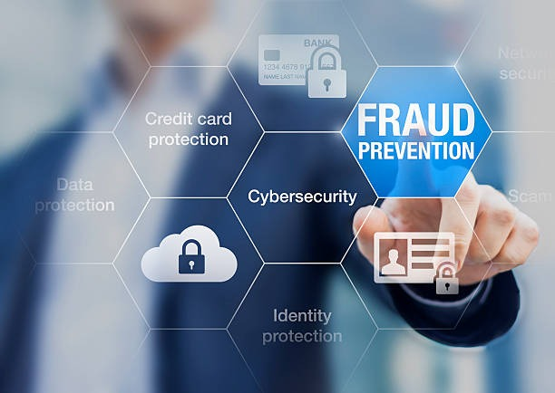

Protecting vulnerable groups from online exploitation and abuse

Financial Fraud
Safeguarding digital transactions and investments
Other Cyber Crime
Addressing advanced cyber threats and data security
Cybersecurity Learning Corner
🛡️
Data Protection
🔐
Password Safety
🎣
Phishing
🌐
Safe Browsing
Data Protection
Data protection forms the foundation of cybersecurity, focusing on safeguarding your most valuable digital assets. In our interconnected world, personal and sensitive information requires multiple layers of security to prevent unauthorized access and data breaches. Key Components : Encryption: Transform your data into unreadable code that only authorized parties can decode. Regular Backups : Create multiple copies of important files stored in secure, separate locations. Access Controls : Implement user permissions and authentication systems to limit who can view or modify data. Data Audits : Regularly review what information you're storing, who has access, and whether it's still necessary.Best Practices: Use full-disk encryption on laptops and mobile devices. Avoid sharing confidential information through unsecured channels like email or messaging apps. Regularly update privacy settings on social media and online accounts. Implement the principle of least privilege - give users only the minimum access they need.
Password Safety
Strong password practices are your first line of defense against unauthorized account access. With cybercriminals using sophisticated tools to crack weak passwords, creating and managing secure credentials has become more critical than ever. Password Fundamentals : Complexity: Use a mix of uppercase letters, lowercase letters, numbers, and special characters. Length : Aim for at least 12-16 characters - longer passwords are exponentially harder to crack. Uniqueness : Never reuse passwords across multiple accounts. Unpredictability : Avoid personal information like birthdays, names, or common words. Modern Password Management : Password Managers: Use tools like Bitwarden, 1Password, or LastPass to generate and store unique passwords. Two-Factor Authentication (2FA): Add an extra security layer with SMS codes, authenticator apps, or hardware tokens. Passphrase Strategy: Consider using memorable phrases with substitutions (e.g., "Coffee&Clouds2024!") Regular Updates: Change passwords for sensitive accounts periodically, especially after security breaches.
Phishing
Phishing attacks trick users into revealing sensitive information or installing malicious software by impersonating legitimate organizations. These social engineering attacks have become increasingly sophisticated, making awareness and vigilance essential. Common Phishing Tactics: Email Phishing: Fake emails from banks, retailers, or services requesting login credentials or personal information.Spear Phishing: Highly targeted attacks using personal information to appear more legitimate. Smishing : Phishing via SMS text messages, often claiming urgent account issues.Vishing: Voice phishing through phone calls impersonating customer service representatives. Recognition Signs: Urgent language demanding immediate action. Generic greetings like "Dear Customer" instead of your name. Suspicious sender addresses or slight misspellings in domain names. Unexpected attachments or links. Requests for sensitive information that legitimate companies wouldn't ask for via email.Protection Strategies: Verify sender identity through independent channels before responding. Hover over links to preview destinations without clicking. Use email security features and spam filters. Keep software and browsers updated with latest security patches.
Safe Browsing
Safe browsing practices protect you from malicious websites, downloads, and online threats while maintaining your privacy and security across the internet. Essential Browsing Security: HTTPS Verification: Look for the padlock icon and "https://" in the address bar, especially on sites handling personal information.Software Updates: Keep browsers, plugins, and operating systems current with security patches. Download Caution: Only download software from official sources and verified publishers.Ad Blockers: Use reputable ad-blocking extensions to prevent malicious advertisements. Privacy Protection: Private Browsing: Use incognito/private modes for sensitive browsing sessions.VPN Usage: Consider virtual private networks for additional privacy, especially on public Wi-Fi. Cookie Management: Regularly clear cookies and browsing data, adjust privacy settings.DNS Security: Use secure DNS services that block known malicious domains. Wi-Fi Safety: Avoid conducting sensitive activities on public Wi-Fi networks. Verify network names with establishment staff before connecting. Turn off auto-connect features for Wi-Fi networks. Use mobile hotspots when secure Wi-Fi isn't available.
Cybersecurity Media Gallery
Cyber Safety Tips
CyberDost Tweet
इस बुधवार के #CyberSafeLive पर मिलिए श्री अंकुश मिश्रा (डीएसपी, उत्तराखंड पुलिस) से।
जानिए — ऑनलाइन सुरक्षित रहने के तरीके और डिजिटल पेमेंट सुरक्षा के ज़रूरी टिप्स।
Our mission is to create a safer digital environment by empowering individuals and communities with the knowledge and tools needed to combat cybercrime. We believe that awareness is the first and most crucial step in preventing online threats.
This portal is a comprehensive resource designed to educate users on various types of cybercrimes, their legal implications, and effective prevention strategies. We aim to foster a proactive approach to cybersecurity, helping you protect your personal information, financial assets, and digital identity.
We are a dedicated team of experts in cybersecurity, law enforcement, and digital forensics. Our goal is to make complex information accessible to everyone, from children and students to professionals and senior citizens. By providing up-to-date information and interactive tools, we strive to build a more cyber-resilient society.
Cyber Awareness
Cyber awareness is a critical skill in today's digital age. It involves understanding the risks and threats present online and knowing how to protect yourself from them. A high level of cyber awareness can help you avoid common pitfalls and secure your digital life.
Recognizing phishing attempts
Creating strong, unique passwords
Securing your social media accounts
Using public Wi-Fi safely
Understanding the importance of software updates
By staying informed and vigilant, you can significantly reduce your risk of becoming a victim of cybercrime. Remember, cybersecurity is a shared responsibility, and every action you take contributes to a safer online world for everyone.
Cybersecurity Learning Corner
🛡️
Data Protection
🔐
Password Safety
🎣
Phishing
🌐
Safe Browsing
Data Protection
Data protection forms the foundation of cybersecurity, focusing on safeguarding your most valuable digital assets. In our interconnected world, personal and sensitive information requires multiple layers of security to prevent unauthorized access and data breaches. Key Components : Encryption: Transform your data into unreadable code that only authorized parties can decode. Regular Backups : Create multiple copies of important files stored in secure, separate locations. Access Controls : Implement user permissions and authentication systems to limit who can view or modify data. Data Audits : Regularly review what information you're storing, who has access, and whether it's still necessary.Best Practices: Use full-disk encryption on laptops and mobile devices. Avoid sharing confidential information through unsecured channels like email or messaging apps. Regularly update privacy settings on social media and online accounts. Implement the principle of least privilege - give users only the minimum access they need.
Password Safety
Strong password practices are your first line of defense against unauthorized account access. With cybercriminals using sophisticated tools to crack weak passwords, creating and managing secure credentials has become more critical than ever. Password Fundamentals : Complexity: Use a mix of uppercase letters, lowercase letters, numbers, and special characters. Length : Aim for at least 12-16 characters - longer passwords are exponentially harder to crack. Uniqueness : Never reuse passwords across multiple accounts. Unpredictability : Avoid personal information like birthdays, names, or common words. Modern Password Management : Password Managers: Use tools like Bitwarden, 1Password, or LastPass to generate and store unique passwords. Two-Factor Authentication (2FA): Add an extra security layer with SMS codes, authenticator apps, or hardware tokens. Passphrase Strategy: Consider using memorable phrases with substitutions (e.g., "Coffee&Clouds2024!") Regular Updates: Change passwords for sensitive accounts periodically, especially after security breaches.
Phishing
Phishing attacks trick users into revealing sensitive information or installing malicious software by impersonating legitimate organizations. These social engineering attacks have become increasingly sophisticated, making awareness and vigilance essential. Common Phishing Tactics: Email Phishing: Fake emails from banks, retailers, or services requesting login credentials or personal information.Spear Phishing: Highly targeted attacks using personal information to appear more legitimate. Smishing : Phishing via SMS text messages, often claiming urgent account issues.Vishing: Voice phishing through phone calls impersonating customer service representatives. Recognition Signs: Urgent language demanding immediate action. Generic greetings like "Dear Customer" instead of your name. Suspicious sender addresses or slight misspellings in domain names. Unexpected attachments or links. Requests for sensitive information that legitimate companies wouldn't ask for via email.Protection Strategies: Verify sender identity through independent channels before responding. Hover over links to preview destinations without clicking. Use email security features and spam filters. Keep software and browsers updated with latest security patches.
Safe Browsing
Safe browsing practices protect you from malicious websites, downloads, and online threats while maintaining your privacy and security across the internet. Essential Browsing Security: HTTPS Verification: Look for the padlock icon and "https://" in the address bar, especially on sites handling personal information.Software Updates: Keep browsers, plugins, and operating systems current with security patches. Download Caution: Only download software from official sources and verified publishers.Ad Blockers: Use reputable ad-blocking extensions to prevent malicious advertisements. Privacy Protection: Private Browsing: Use incognito/private modes for sensitive browsing sessions.VPN Usage: Consider virtual private networks for additional privacy, especially on public Wi-Fi. Cookie Management: Regularly clear cookies and browsing data, adjust privacy settings.DNS Security: Use secure DNS services that block known malicious domains. Wi-Fi Safety: Avoid conducting sensitive activities on public Wi-Fi networks. Verify network names with establishment staff before connecting. Turn off auto-connect features for Wi-Fi networks. Use mobile hotspots when secure Wi-Fi isn't available.
Cybersecurity Media Gallery
Cyber Safety Tips
CyberDost Tweet
इस बुधवार के #CyberSafeLive पर मिलिए श्री अंकुश मिश्रा (डीएसपी, उत्तराखंड पुलिस) से।
जानिए — ऑनलाइन सुरक्षित रहने के तरीके और डिजिटल पेमेंट सुरक्षा के ज़रूरी टिप्स।
If you have questions, feedback, or need assistance, please feel free to reach out to us. Your safety and security are our top priorities, and we are here to help.
For urgent matters related to cybercrime, we recommend contacting your local law enforcement or national cybercrime reporting agencies. In India, you can report cybercrime incidents on the official Cybercrime.gov.in portal.
Email: contact@cyberaware.com
Contact no : 1930
Social Media: @CyberSafetyPortal
Help
Welcome to the Help section of our portal. This page is designed to assist you in navigating the website and understanding its features. If you are a victim of cybercrime, here are the immediate steps you should take:
Do not panic. Keep calm and do not delete any evidence.
Document everything. Take screenshots of messages, emails, or websites related to the crime.
Report the incident. File a complaint with the cybercrime authorities. In India, you can use the National Cyber Crime Reporting Portal at cybercrime.gov.in.
Secure your accounts. Change all your passwords, especially for compromised accounts. Enable two-factor authentication (2FA) wherever possible.
Inform your bank. If the crime involves financial fraud, contact your bank immediately to block your accounts and cards.
For general inquiries about our portal, please refer to the About Us and Cyber Awareness sections, or contact us directly.
Children as young as 8-12 are being targeted through gaming platforms and social media. Dark web networks facilitate international trafficking of child abuse material.
Section 67B IT Act – Child pornography
Section 67A IT Act – Sexually explicit material
Section 354A IPC – Sexual harassment
Section 354C IPC – Voyeurism
Section 66E IT Act – Violation of privacy
Section 66F IT Act – Cyber terrorism
1.2 Cyberbullying and Harassment of Women
70% of Indian women report receiving unsolicited explicit content on social platforms
Deepfake technology being used to create non-consensual intimate images of women.
Section 354D IPC – Stalking
Section 509 IPC – Insulting modesty of women
Section 503 IPC – Criminal intimidation
Section 506 IPC – Punishment for criminal intimidation
Section 507 IPC – Criminal intimidation by anonymous communication
Section 67 IT Act – Publishing or transmitting obscene material
1.3 Online Human Trafficking
Social media platforms used to lure vulnerable women and children with fake job promises. Cross-border trafficking operations coordinated through encrypted messaging apps.
Section 378 IPC – Theft
Section 415 IPC – Cheating
Section 416 IPC – Cheating by personation
Section 420 IPC – Cheating and dishonestly inducing delivery of property
Section 66C IT Act – Identity theft
Section 66D IT Act – Cheating by personation using computer resource
1.4 Sextortion and Blackmail
Victims often coerced into sending intimate photos which are later used for extortion. Many cases involve minors being blackmailed by adults posing as peers online.
Section 383 IPC – Extortion
Section 384 IPC – Punishment for extortion
Section 385 IPC – Putting person in fear of injury to commit extortion
Section 403 IPC – Dishonest misappropriation of property
Section 405 IPC – Criminal breach of trust
Section 66 IT Act – Computer related offences
General Information
Women and children are often targeted in cyber crimes such as online harassment, cyber stalking, child pornography, exploitation, and blackmail. These crimes can cause severe emotional and psychological harm.
Common Examples
Cyber stalking and online harassment of women
Child sexual abuse material (CSAM) shared online
Financial Fraud
2.1 Online Banking Fraud
Phishing attacks targeting bank credentials are on the rise, leading to unauthorized transactions. Malware and trojans steal banking information from compromised devices.
Section 66C IT Act – Identity theft
Section 66D IT Act – Cheating by personation using computer resource
Section 420 IPC – Cheating and dishonestly inducing delivery of property
2.2 Investment and Loan Scams
Victims lose an average of ₹50,000 per investment scam in India
Fake investment schemes promoted on social media and messaging apps promise high returns. Fraudulent loan offers require upfront processing fees that are never returned.
Section 415 IPC – Cheating
Section 420 IPC – Cheating and dishonestly inducing delivery of property
2.3 Credit Card Fraud
Skimming devices at ATMs and POS machines capture card details. Phishing websites mimic legitimate online stores to steal credit card information.
Section 66C IT Act – Identity theft
Section 66D IT Act – Cheating by personation using computer resource
Section 420 IPC – Cheating and dishonestly inducing delivery of property
General Information
Financial cyber crimes encompass various illicit activities designed to steal money or financial information. These include online banking fraud, credit card fraud, investment scams, and phishing attacks targeting financial institutions.
Common Examples
Phishing emails impersonating banks
Fraudulent investment schemes
Online loan scams
Other Cyber Crime
3.1 Hacking and Data Breaches
State-sponsored hacking groups target critical infrastructure. Ransomware attacks encrypt organizational data and demand cryptocurrency for release.
Section 43 IT Act – Penalty for damage to computer etc.
Section 66 IT Act – Computer related offences
Section 66F IT Act – Cyber terrorism
3.2 Cyber Stalking and Online Defamation
Over 60% of cyber stalking victims experience psychological distress
Persistent online harassment and monitoring of individuals across multiple platforms. Publication of false and damaging information to harm reputation.
Section 354D IPC – Stalking
Section 500 IPC – Punishment for defamation
Section 509 IPC – Insulting modesty of women
Section 503 IPC – Criminal intimidation
Section 506 IPC – Punishment for criminal intimidation
Section 507 IPC – Criminal intimidation by anonymous communication
3.3 Digital Piracy and Copyright Infringement
Illegal distribution of copyrighted movies, music, and software through torrents and streaming sites. Counterfeit goods sold online infringe on intellectual property rights.
Section 65 IT Act – Tampering with computer source documents
The Copyright Act, 1957
General Information
This category covers a wide range of cyber crimes not specific to women, children, or financial fraud. These include hacking, data breaches, cyber stalking, online defamation, digital piracy, and other advanced cyber threats.